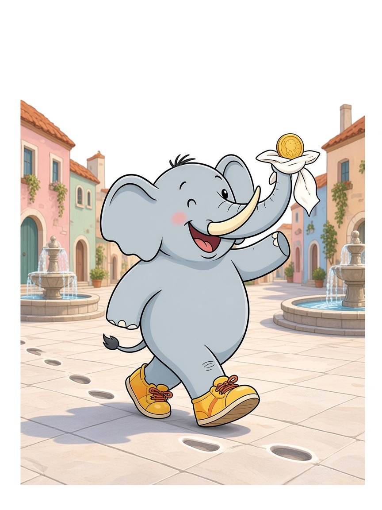
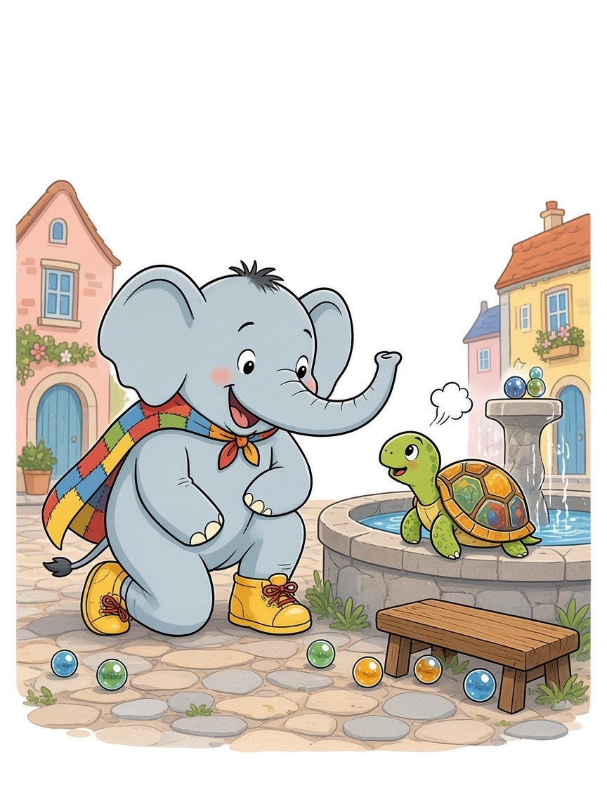
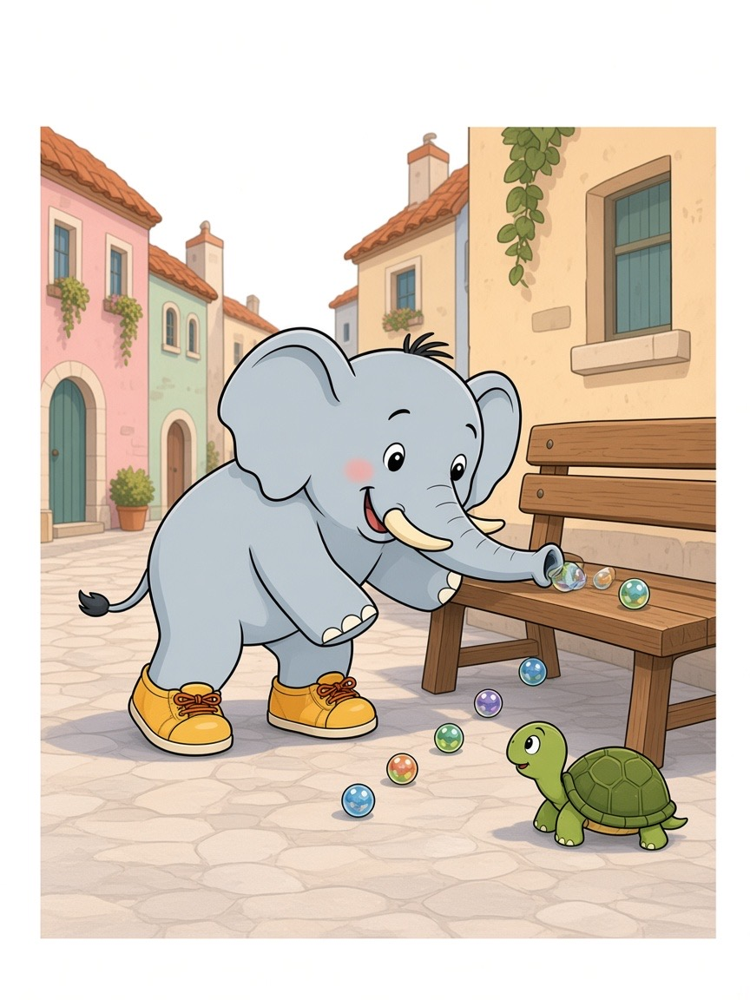
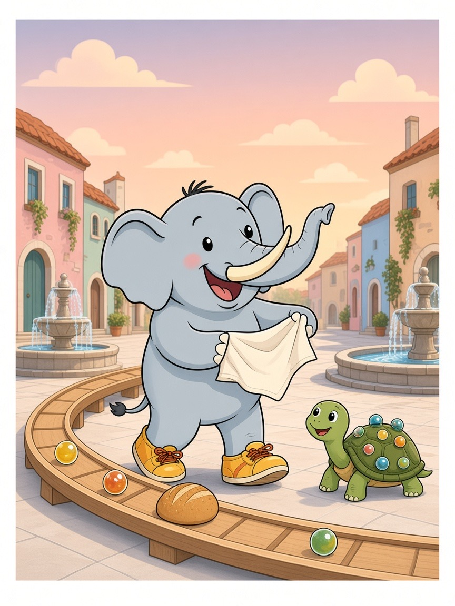

C'era una volta un Elefante di nome Franco, che gli amici chiamavano ... EleFranco. Di cognome faceva Franchini.
Abitava nella sua accogliente casa nel paesino di FrancaVilla, un borgo di piazze lisce come biglie e vicoli in discesa dolce, dove le fontane erano basse e rotonde, i ciottoli luccicavano e le case pastello sembravano le scatole di un gioco gigante.
Era il tardo pomeriggio e EleFranco aveva fame di cena: «Devo andare dal fornaio Tondo, in fondo al paese, a prendere una pagnotta rotonda prima che spenga il forno!»
Si infilò le sue scarpe giganti da gioco, suola morbida color miele e lacci arancioni, mise una moneta nel fazzoletto e uscì di casa. Le scarpe calcarono il marmo e la piazza rispose con tutto il suo peso, senza un passo in punta di piedi: THUMP THUMP THUMP THUMP
Vicino alla fontana bassa c'era una tartaruga piccola, con il guscio color ambra punteggiato di pallini chiari, proprio come biglie. Sospirava piano, senza fretta, come fanno le tartarughe anche quando sono in pensiero. Era Mina.
«EleFranco, le ho perse,» disse. «Giocavo con le mie biglie e il sacchetto si è aperto. Sono rotolate nelle fessure, sotto le panchine, dietro la fontana. Quella color miele si chiama Sole, ed è la mia preferita. Senza di lei la pista non parte.»
EleFranco si inginocchiò. Il marmo era fresco sotto le scarpe. «Non ti preoccupare, Mina. La proboscide è brava a frugare.»
La infilò sotto la panchina e tirò fuori una biglia blu, poi una verde dal bordo della fontana, poi una trasparente nascosta in un vaso di gerani. Mina batteva le zampette a ogni ritrovamento e rimetteva le biglie in fila, come un piccolo tesoro.
Ma mentre cercava, la mente cominciò a vagare: pensò alla pagnotta, se sarebbe croccante o morbida, se Tondo ci avrebbe messo i semini, e a quanto burro era rimasto in dispensa.
Stava quasi per annusare un geranio invece di una biglia quando Mina gridò: «EleFranco, Sole è vicina, la sento tintinnare!»
Allora l'elefante scosse le grandi orecchie e disse ad alta voce la sua parola magica: "FOCUS!"
«Una biglia alla volta, Mina. Il naso ascolta meglio se va piano.»
Riprese a frugare con cura, ascoltando il ticchettio nel marmo. Sole uscì da una fessura, calda di pomeriggio, e Mina la strinse tra le zampette. «Eccoti. Non rotolare più senza di me.»
Poi EleFranco, felice del successo, diede un soffio troppo forte per togliere la polvere dal sacchetto. Le biglie schizzarono via in ogni direzione. Blu, verde, miele, trasparente: rotolarono in tutti i vicoli di FrancaVilla, giù per le discese, intorno alla fontana, fino in fondo al paese.
«Ops,» disse EleFranco. «Le abbiamo ritrovate e subito riperse. E la strada del forno è diventata una pista di vetro.»
Il sole scendeva. Il forno di Tondo stava per chiudere. La cena sembrava rotolata via insieme a Sole.
Mina guardò i vicoli lucidi e non sospirò più. «EleFranco, se sono rotolate così bene, costruiamo la pista apposta. Lunga. Lunga tutta FrancaVilla.»
Si misero al lavoro. EleFranco spianava il percorso con la proboscide, piano, senza un altro soffio dispettoso. Mina sistemava i bordi con sassolini e ramoscelli, un pezzetto alla volta. La pista scese dalla piazza, girò intorno alla fontana, passò sotto i balconi pastello, costeggiò gli orti e arrivò fino alla porta del forno. Poi tornò indietro, in un anello gentile, fino ai piedi di EleFranco.
E giocarono. La biglia blu fece tutto il giro e tornò. La verde suonò tik-tik-tik sui ciottoli. I vicini si affacciarono alle finestre. Qualcuno batté le mani piano, per non spaventare la pista. Il pomeriggio divenne sera e loro giocavano ancora, senza fretta, con Sole che brillava come una piccola lampada.
Proprio all'ultima luce, Mina lanciò Sole. La biglia color miele percorse tutta FrancaVilla, cantando sul marmo, e si fermò contro la porta del fornaio Tondo. Toc.
Tondo aprì, infarinato e sorridente. Vide la biglia, vide in fondo alla pista l'elefante e la tartaruga, e capì senza bisogno di parole. Prese la pagnotta più rotonda, ancora calda, la posò sulla pista come si posa una biglia grande e le diede un colpetto.
La pagnotta rotolò piano, guidata dai bordi che avevano costruito insieme, passò sotto i balconi, girò la fontana e arrivò avvolta nel suo profumo proprio nel fazzoletto che EleFranco teneva aperto. La moneta non servì. Tondo, da lontano, fece segno che la cena era un regalo per chi aveva trasformato il paese in un gioco.
Sole tornò sull'ultima discesa e si fermò tra le zampe di Mina.
La missione era compiuta senza camminare fino al forno: la pagnotta era lì, la pista brillava nella sera, e FrancaVilla odorava di pane e di gioco.
EleFranco capì allora la morale di quella giornata: Quello che si cerca insieme disegna una strada nuova. 🟡
EleFranco e Mina si guardarono, stanchi e felici, e l'elefante scoppiò nella sua famosa risata: OH... OH... OH...